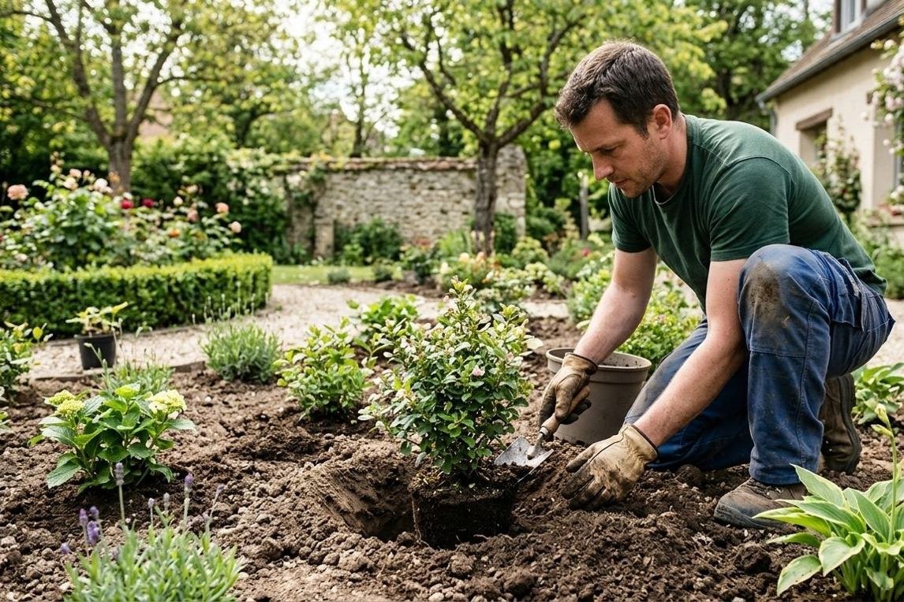
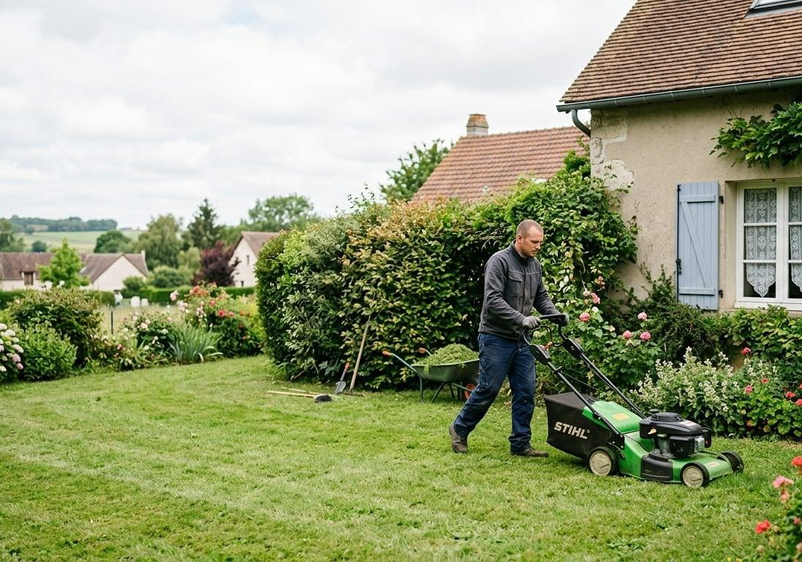
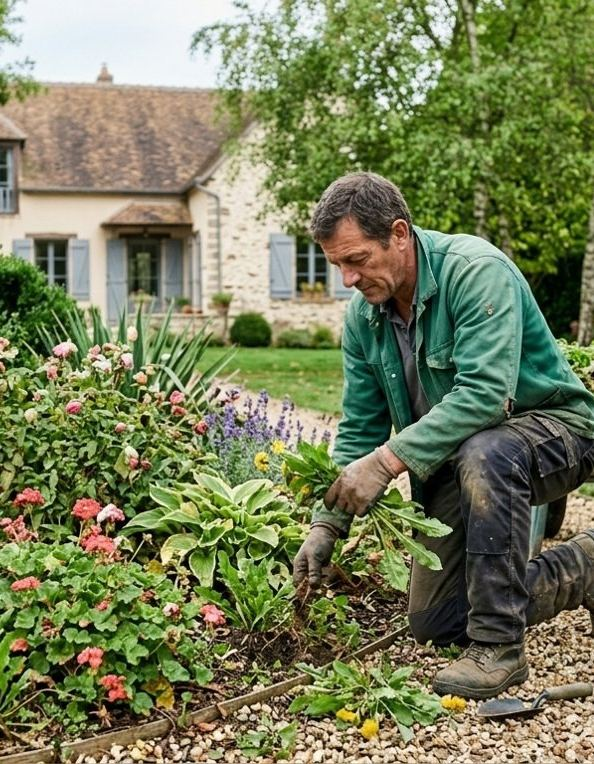

Coralie Michel Paysage · Bullion (78)
Un jardin conçu et entretenu avec soin.
Coralie Michel Paysage crée, plante et entretient vos espaces verts à Bullion et dans les environs.
Demande de devis en ligne · Bullion (78)
Nos prestations
Créer et entretenir votre jardin
Des services d’aménagement paysager pour les particuliers de Bullion et des environs.

Création de jardin
Conception et aménagement de votre espace vert, selon votre terrain et vos envies.
En savoir plus →À propos
Une entreprise de paysage à Bullion
Coralie Michel Paysage est dirigée par Coralie Michel. L’entreprise propose des services d’aménagement paysager à Bullion, dans les Yvelines (78).
Pour parler de votre jardin, un seul numéro : le 06 70 79 02 30.
Coralie Michel, dirigeante


Contact
Un projet de jardin ? Parlons-en.
Appelez Coralie Michel ou demandez un devis en quelques lignes : votre message est prêt à envoyer par SMS.
Bullion (78)